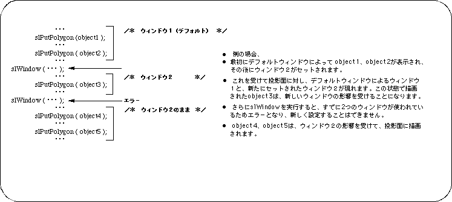
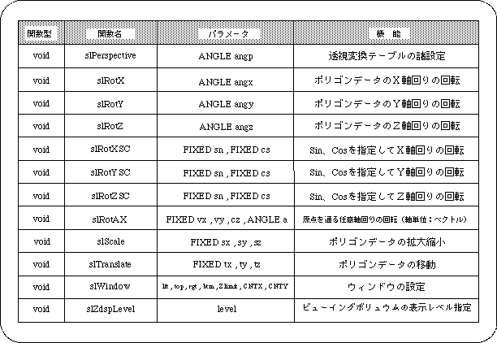

Return to previous page | Return to menu | Go to next page
Only two functions “slWindow” can be used in one frame.
When the function “slPutPolygon”, “slPutSprite”, etc. is called, the first window is used at that point, and after that, “slWindow” can only be called once more.
(Calling the above function changes the default window settings)
Only one window setting works at a time. In addition, when the function “slWindow” is called, the prior polygons (sprites) and the subsequent ones are separated, and in this case, the subsequent ones always take precedence.

In this chapter, the functions in the following table were explained.
